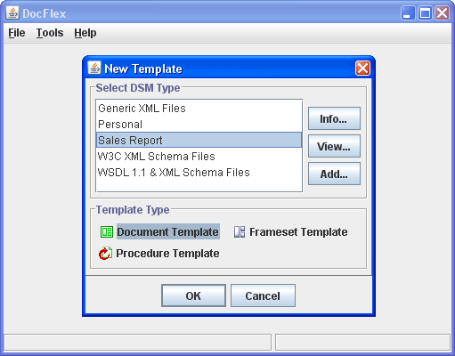
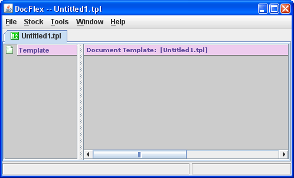
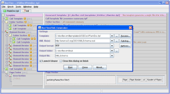

| For general information about DocFlex templates, please see DocFlex Technology | What are Templates? |
Your task is the following. You have some XML files and now you want to produce from them some report or documentation using DocFlex/XML. What should you do?
Here are your steps:
(Instead of the XML schema, you may also create a DTD file, which will serve the same role. However, XML schema is a better and more modern alternative with a lot more capabilities.)
Why is XML schema needed?
Because it will provide DocFlex/XML with the data structure and type information about your XML files. Without it, you will not be able to program much of the processing in your templates. Everything will be limited only to the case of Generic XML Files used in XMLDoc templates. If your processing is supposed to be something more than that, an XML schema is the must!
In short, XML Type is a group of records in an XML Type configuration file, which provide DocFlex/XML with all information necessary for processing a specific set of XML files. In particular, this will include the location of your XML schema (XSD) file and some other settings.
For further details about how to specify your XML Type, please see Defining XML Type (below).
For a detailed example of creating a sample template from scratch, please see DocFlex/XML | Tutorials.
Each XML Type is associated with a certain class of XML documents with the same data structure. Such a class is normally based on a certain DTD or W3C XML Schema file (see Assigning DTD and Assigning XML Schemas respectively). However, some additional settings may be added.
The information provided by the XML Type is used both by the Template Designer during designing the templates and by the generator during processing those templates and generating output documents.
| In a more general terminology of the DocFlex Technology, each XML Type is actually a special kind of DSM Type (Data Source Model Type), which is limited to a certain class of XML file data sources. |
java.util.Properties
class.)
The XML Type is identified by a short name called XML Type Identifier,
which we shall refer as <typeId>.
(The identifier must contain only letters, digits and '_' sign.
No other characters should be used!)
Once the XML Type identifier name is chosen, it must be used everywhere as a prefix of each property related to the definition of this XML Type.
Besides the identifier, the XML Type must have a certain display name, which is specified using '<typeId>.name' property. That display name will be shown in the Template Designer.
You may also add a short description to your XML Type using '<typeId>.doc' property.
For example, let our XML Type has an identifier 'my_xml'. Then, the whole XML Type definition may look like the following:
An XML Type normally should be based on some DTD or XSD (W3C XML Schema) files, which is where the actual XML data structure and type information is obtained by DocFlex/XML. (When both DTD and XSD are specified, the XSD will have a higher priority.)my_xml.name = My XML Files my_xml.doc = Describes the XML files I use in my project my_xml.xsd.files = C:/myproject/xml/myxml.xsd my_xml.ns.1.prefix = myxml my_xml.ns.1.uri = http://www.company.com/MyProject/
It is also possible to specify neither DTD nor XSD files. However, in that case, you will be limited to a very general case of XML files with few capabilities to process them (see XMLDoc).
A single XML Type Configuration File may contain definitions of any number of different XML Types. Alternatively, you can place a particular XML Type definition in a separate XML Type Configuration File and store it near the templates based on that type.
How does DocFlex/XML use XML Types?
To open any particular template in the Template Designer or to process it with the generator (in order to generate some output), DocFlex/XML needs the XML Type on which that template is based. It searches for the necessary XML Type (by the XML Type Identifier found in the template) among those XML Types that have been loaded from all known XML Type Configuration Files.
DocFlex/XML supports a number of ways to specify locations of XML Type Configuration Files:
".xmltype" as the extension (e.g. 'my_xml.xmltype').
When the Template Designer or generator open a template from this directory and the necessary XML Type is unknown, it will be loaded from that configuration file.
An XML DTD (Document Type Definition), which you want to use as a base for your XML Type, should be specified with the following settings:
Any XML documents which you want to associate with this XML Type (and process with the templates based on it) should be based on this DTD!
my_xml.dtd.file=C:/xml/myxml.dtdLet's suppose your XML files contain the following <!DOCTYPE> instruction:
<!DOCTYPE SYSTEM "http://www.myorg.org/dtd/myxml.dtd">
my_xml.dtd.file=C:/xml/myxml.dtd my_xml.dtd.systemID=http://www.myorg.org/dtd/myxml.dtd
Let's suppose your XML files contain the following <!DOCTYPE> instruction:
<!DOCTYPE PUBLIC "-//MYORG//DTD My special XML 1.x//EN">
my_xml.dtd.file=C:/xml/myxml.dtd my_xml.dtd.publicID=-//MYORG//DTD My special XML 1.x//EN
Notes:
my_xml.xsd.files=C:/xml/myschema.xsdmy_xml.xsd.files=C:/xml/myschema1.xsd;C:/xml/myschema2.xsd
For example, suppose the initial schema that describes the XML Type contains a line like the following:
<xs:import namespace="http://www.w3.org/XML/1998/namespace"
schemaLocation="http://www.w3.org/2001/xml.xsd"/>
For such a schema to be processed correctly, the 'xml.xsd' schema must also be loaded.
However, according to the <xs:import> element, that schema will be searched in Internet.
In order to avoid loading it from Internet all the time, the xml.xsd file should be placed
near the initial schema, so as to have it loaded from the local drive.
But to make it work, the schemaLocation attribute needs to be changed.
However, modifying the initial main schema(s) may be not very good, especially when there are many
<xs:import> elements
(as well as possibly <xs:include> and <xs:redefine>
elements, which also load subschemas)
and you want frequently to upgrade the initial schemas with new versions,
or the initial schemas must not be changed for some reasons.
XML catalogs provide a workaround of that problem.
Instead of changing the schemas, you just need to create a catalog.xml file
with the content like this:
<?xml version="1.0"?>
<catalog xmlns="urn:oasis:names:tc:entity:xmlns:xml:catalog">
<system systemId="http://www.w3.org/2001/xml.xsd" uri="xml.xsd"/>
</catalog>
Then, place that file along with the both schemas and specify it in
xsd.catalogs property:
my_xml.xsd.files=C:/xml/myschema.xsd
my_xml.xsd.catalogs=C:/xml/catalog.xml
Note, if the schemaLocation attribute is not specified in the mentioned above
<xs:import> element at all, the following catalog file should be used:
<?xml version="1.0"?>
<catalog xmlns="urn:oasis:names:tc:entity:xmlns:xml:catalog">
<uri name="http://www.w3.org/2001/xml.xsd" uri="xml.xsd"/>
</catalog>
See also: DocFlex/XML | Documentation | Installation / Configuration Files | XML Catalogs
XML Schemas contain definitions basically about two major things:
elements (e.g. <xs:element>) and
types (e.g. <xs:complexType> or
<xs:simpleType>).
Each element definition describes a class of the XML elements identified by a certain name (which is the one used as the element tag in XML documents).
Unlike the pure elements, element type definitions generally are not bound to specific XML elements with the specific names. Instead, they serve as the abstract definitions of element data structures, which can extend one another, and eventually should be used as bases in particular definitions of elements.
From the DocFlex/XML's point of view, both notions are considered as Element Types because they describes certain classes of elements rather than particular element instances, which are things contained in XML documents and carrying the data to be processed.
XML Schemas allow two kinds of element type definitions: local and global ones.
Local type definitions are nested within the definitions of elements. DocFlex/XML considers them simply as parts of the corresponding element definitions.
Global type definitions always have individual names. Each global type definition may be used as a base for different element definitions simultaneously. Effectively, it represents a certain abstract Element Type which can be specifically recognized by DocFlex so as by that Element Type a specific processing in templates may be organized (e.g. filtering or iterations).
When 'xsd.includeAbstractTypes' property is specified as true,
all global types declared in the XML Schema will be treated as separate Element Types and appear
in various dialogs and treeviews in Template Designer. The names of such Element Types are produced
from the original names started from '%' (to ensure they are different from any global element names).
When this property is specified as false (which is assumed by default),
all global types will be treated the same way as the local ones. That is, anything declared with
them will be considered as parts of element definitions to which those types are applied.
Here is how the Element Types treeview looks with the inclusion of global types (left picture) and without them (right picture):
The Element Types produced from XML Schema's global type definitions are considered as abstract Element Types (shown with '%'). That means, neither of them, as it is, can be assumed by any XML element. Anyway, you may find this notion useful to program specific processing for the whole set of different physical Element Types derived from the same global type definition in the schema.
In an XML document, the names of the locally defined elements are guaranteed to be unique only within the scope of their parent elements. That means, in the same XML document, there may be several absolutely different local XML elements (possibly having even different structures) sharing the same name. That situation presents a problem with referencing such elements.
DocFlex/XML resolves this problem by introducing Local Element Types.
For every local element definition in the XML schema, there is a certain logical Local Element Type representing it in the XML Type. In various treeviews in the Template Designer, the Local Element Types are shown as child nodes of their parent Element Types (see the right picture above).
The logical Element Types representing the XML schema's global element definitions as well as the definitions of global types (see xsd.includeAbstractTypes option) are called Global Element Types.
Since the names of Local Element Types are not guaranteed to be unique anymore, to distinguish all logical Element Types from one another, DocFlex/XML generates for each Element Type a special global name, which is unique for the whole XML Type. Further, the Element Type is referred by that global name in every situation that may be ambiguous.
The global name of a Global Element Type is always the same as its normal (local) name.
For a Local Element Type, its global name is generated according to the following rules:
<xs:element>
definition is based entirely on a certain global complexType/simpleType and looks like:
<xs:element name="name" type="typeName"/>
the Element Type's global name will be produced as the following:
name%typeName
<xs:element>,
which may look like this:
the global name of the corresponding Element Type will be generated according to where that definition is located:<xs:element name="name"> <xs:complexType> ... </xs:complexType> </xs:element>
<xs:complexType>
with the name 'type_name', the Element Type's global name will be this:
%type_name$name
<xs:group>
with the name 'group_name', the Element Type's global name will be this:
!group_name$name
<xs:element>
definition is nested within another
<xs:element>
definition whose corresponding Element Type has the global name 'parent_global_game',
then the global name of the given local Element Type will be produced as:
parent_global_name$name
That is, it will be represented as the full paths formed from names of nested schema components
separated with '$' starting from a certain global component until the given local
<xs:element>
definition. For example:
DeliveryContact$Address$City
See also XSDDoc | Documentation Features | Local Elements, which is related to this topic.
Instead of URIs, in XML documents, the namespace prefixes are used. Now, an XML name should be written in the following form:
Prefix:LocalNameThat form is called Qualified Name.
Each Prefix is simply a shortcut to a particular namespace URI. Namespace prefixes are specified in XML documents locally and may vary from one XML to another. For instance, one XML document may contain <xsd:complexType> element tags, whereas other document will call the same things as <xs:complexType>.
Because namespaces were introduced above the initial XML 1.0 standard, all possible XML documents now are subdivided into namespace-aware and namespace-unaware ones.
When an XML document is namespace-unaware, nothing prevents it to use the XML names looking as prefix:name. However, in that case, the whole such a name will be considered as a local one (no binding to a namespace URI occurs). DTDs are namespace-unaware by default (however, they may still define XML names with prefixes which can be treated as references to actual namespaces in the XML documents).
DocFlex/XML handles namespaces in the following way.
By default, any XML Type is namespace-unaware. That means, any XML files will be parsed in namespace-unaware mode and any XML names will be treated exactly as they are written.
To make an XML Type namespace-aware, you should declare certain namespaces associated with it. Each namespace should be declared with the following settings:
Where <n> is a number identifying the namespace declaration (which is actually used to connect the declaration's properties together).Like XML documents, DocFlex/XML also needs some shortcuts to refer to particular namespaces. The first prefix specified with this setting (prefix1) will be used as the one. That prefix will appear in the Template Designer and will be stored in DocFlex templates (as part of qualified names).
Each namespace's URI, on the contrary, is specified only once in the XML Type config file and never stored anywhere else. The binding between prefixes and URIs occurs dynamically.
That system makes your templates absolutely independent on anything. You may use different namespace prefixes in your XML Schema files (or DTD) assigned to this XML Type. And you may quickly change any namespace URI itself without changing any templates.
Other prefixes specified with this property are used only together with DTDs (see Assigning DTD).
Actually, nothing prevents you from using namespace prefixes in your DTD (so that XML names will look as qualified ones). But since DTDs are namespace-unaware, XML parser will not recognize those prefixes and bind them automatically to the particular URIs. However, DocFlex/XML can do this for you. The only what you need is to specify with the ns.<n>.prefix property all possible prefixes used in your DTD which you want to bind to the specified URI.
true, indicates that this is the default namespace for the given
XML Type.
When a namespace is declared as default, any XML names associated with it will be used in templates (and shown in the Template Designer) without namespace prefixes. You may use this setting to quickly transform your namespace-unaware templates into namespace-aware ones. Just specify in your XML Type the default namespace, and your templates will be ready to process the namespace-aware XML files.
By default, this setting is false.
Let's suppose your XML files will be starting from something like this:
Then, to process such files with DocFlex/XML you may define the following XML Type:<?xml version="1.0" encoding="utf-8"?> <rdf:RDF xmlns:rdf="http://www.w3.org/1999/02/22-rdf-syntax-ns#" xmlns:dc="http://purl.org/dc/elements/1.1/" xmlns="http://purl.org/rss/1.0/" > ...
Basing on this XML Type, your templates will be using exactly the same XML names as contained in your XML files.rss.name = My RSS rss.xsd.files = C:/xsd/rss-1_0.xsd;C:/xsd/rdf.xsd;C:/xsd/dc.xsd rss.ns.1.uri = http://purl.org/rss/1.0/ rss.ns.1.default = true rss.ns.2.uri = http://www.w3.org/1999/02/22-rdf-syntax-ns\# rss.ns.2.prefix = rdf rss.ns.3.uri = http://purl.org/dc/elements/1.1/ rss.ns.3.prefix = dc
The DOM is basically a tree whose nodes represent everything contained in the source XML file. Most of those nodes are just dedicated to XML elements and their attributes. However, some of DOM nodes represent other things contained in the XML document, such as Text, Comments, Processing Instructions and so on.
The DOM tree starts from a special root node called Document node. This node represents the whole XML document. The Document node, among other things, always contains the Document Element node which represents the root element of the XML document.
DocFlex/XML provides access to almost all types of DOM nodes. It does this by representing the original XML DOM in a bit extended form called XML DSM (Data Source Model). Each XML DSM is linked to the original DOM provided by the XML parser. It maps all XML element into DSM elements and all XML attributes into DSM attributes.
Besides this, the XML DSM maps all other (non-element/attribute) DOM nodes into DSM elements of special Pseudo-Element Types. We shall call those extra elements simply pseudo-elements.
All pseudo-elements have their names started with '#'.
Each Pseudo-Element Type is linked to a certain type of non-element/attribute DOM nodes. Depending on that type, a pseudo-element may contain specific DSM attributes representing the original node's properties. Some pseudo-elements may also have children (which can be both pseudo-elements and normal ones) and be children themselves of normal XML elements.
DocFlex/XML treats pseudo-elements in the same way as the normal XML elements. You can organize iterations by pseudo-elements, access their attributes, reference to them within Location Paths and do anything else. As an example of an application where pseudo-elements are heavily used, see XMLDoc.
Currently, DocFlex/XML supports the following types of pseudo-elements:
Since some pseudo-elements are useful only in rather special situations, by default, not all pseudo-elements are included automatically in every XML Type. The following XML Types config properties control pseudo-elements:true, enables all Pseudo-Element Types at once.In that case, the main template will receive will be the #DOCUMENTS pseudo-element as its root element. This pseudo-element represents the list of all XML files specified to process by the generator (i.e. in the “XML File(s)” field of the generator dialog or on the command line).
For more information about processing multiple XML files, see description for #DOCUMENTS pseudo-element and XMLDoc | Templates as an example of using it.
Example:
The following settings enable all pseudo-elements except #CDATA and tell the generator to start the processing of each XML document from the #DOCUMENT pseudo-element:
my_xml.pseudo-elements.all=true my_xml.pseudo-elements.CDATA=false my_xml.defaultRootElement=Document
This table provides details about all Pseudo-Element Types:
|
Pseudo-Element |
Description |
||||||||||||
| #CDATA |
Represents CDATA sections of the XML document. CDATA sections are used to escape blocks
of text containing characters that would otherwise be regarded as markup.
By default, CDATA sections are parsed into the normal TEXT nodes. However, when #CDATA pseudo-elements are enabled, the CDATA sections will be recognized separately and produce #CDATA pseudo-elements. This feature may rarely be used, mostly when you need to reproduce the original content of an XML file (see XMLDoc | Templates as example).
Example: The following CDATA section in an XML file: <![CDATA[ will produce a #CDATA pseudo-element with the value:
|
||||||||||||
| #COMMENT |
Represents a COMMENT node. If enabled, #COMMENT pseudo-elements may appear as children
of any normal XML elements as well as within the pseudo-element #DOCUMENT.
Example: The following comments in an XML file:
will produce a #COMMENT pseudo-element with the value |
||||||||||||
| #CUSTOM |
Represents a custom pseudo-element.
About Custom Elements Most of the data processed by a template come from some external data source via its virtual XML-like representation called Data Source Model (DSM), which maps everything onto some elements and their attributes.Therefore, most of the functionality available in templates (such as iterators, hash-maps and so on) is intended for processing of elements and attributes. But what if you want to use that functionality to process some different data, for instance, those coming from template parameters or elsewhere? Custom elements allow you to do that! Using custom elements, you can wrap any your data in the form of elements and attributes. Further, you can process such elements using standard means either separately or together with some elements from the main data source.
Using Custom Elements Custom elements are created withCustomElement() function.
You can load a custom element with some useful data by specifying its value when you create it: Later, you can access the data via themyData = ...; // some your data ... el = CustomElement (myData); GOMElement.value property:
A custom element may have unlimited number of attributes.
Using setAttr() function, at any time, you can add new attributes
or change the values of existing ones.
You can equally remove any of the attributes:
Custom Element Features
|
||||||||||||
| #DOCTYPE |
This pseudo-element represents the <!DOCTYPE> instruction of the XML file.
If enabled, it may appear only as a child of the #DOCUMENT
pseudo-element.
Attributes:
|
||||||||||||
| #DOCUMENT |
This pseudo-element is linked to the DOM Document node and
represents the whole XML document (therefore, only one
instance of it may exist). If you need to process all possible nodes in the XML document,
you should start from this pseudo-element. See
<typeId>.defaultRootElement
setting for more details.
Attributes: Children: Document Element, #DOCTYPE, #COMMENTs, #PIs |
||||||||||||
| #DOCUMENTS |
This pseudo-element represents the list of all open XML documents.
When <typeId>.defaultRootElement property of XML Type config is set to 'Documents', all XML files specified to process by the generator are passed to the main template as children of #DOCUMENTS pseudo-element, which the template receives as its root element. Every XML file will be open, parsed and represented as #DOCUMENT child element. Further, within the template's root block, you can organize iteration by such children and process every XML document as you need.
Function
All open XML documents together constitute a single
DSM (Data Source Model).
This allows processing everything as a single "meta" XML document. In particular, you can iterate
and access elements and attribute contained in different XML documents simultaneously
within the same iterators
and other template components.
An identifier of each XML element will be unique for the whole DSM (see See XMLDoc | Templates as an example of this kind of processing. Children: #DOCUMENT |
||||||||||||
| #NAMESPACE |
Represents a namespace binding specified in an XML element.
If this pseudo-element type is enabled, each namespace binding specified in an element with one of
declarations will produce a #NAMESPACE pseudo-element describing this binding. That element will be added to the children of the given XML element. If an XML element contains several namespace binding declarations, there will be as many #NAMESPACE pseudo-elements added to the element's real children. All namespace bindings declared in an XML document can be obtained via namespaces attribute of #DOCUMENT pseudo-element. As an example of using #NAMESPACE pseudo-elements, see XMLDoc | xmlns-bindings.tpl template. Attributes:
|
||||||||||||
| #PI |
Represents a Processing Instruction. If enabled, #PI pseudo-elements may appear as children
of any normal XML elements as well as within the pseudo-element #DOCUMENT.
Example: The following Processing Instruction in an XML file:
will produce a #PI pseudo-element which, if it was a normal XML element, would be written
as the following:
|
||||||||||||
| #TEXT |
Represents a TEXT node. If enabled, #TEXT pseudo-elements may appear as one or multiple children
of any normal XML element.
Notes:
Example: The following piece of an XML:
will produce a single
|
Each DSM element may have a certain graphic representation called element image. Element images are typically some kind of diagrams, which may be supplied with hypertext imagemaps that allow linking some image regions to anything else.
Element images (and imagemaps to them) are provided by a special extension of the DSM driver called Element Image Provider. Further, they can be easily operated in templates using Image Controls, wich can insert the images in the output and hyperlink them to other parts of the documentation.
Since XML is a universal data markup language, there cannot be a single meaning of what “element image” actually is. It comes down to a particular XML-file data source, which is described by the given XML Type. So, any element image provider must be a part of the XML Type definition. It is specified with the following settings:
<typeId>.imageProvider.class=<image_provider_class>where <image_provider_class> is a Java class that implements a special interface:
com.docflex.api.dsm.DSMImageProvider
Generation of diagrams is not simple. So, the actual element image provider must be a large subsystem (or even separate piece of software).
| DocFlex/XML currently includes no its own diagramming engine. So, any element image providers are implemented in the form of integrations with some other software, e.g. see: DocFlex/XML | Integrations | XMLSpy |
The image provider class (specified in the XML Type definition) is little more than a communication bridge to that subsystem, which may require additional settings to control it. Moreover, the same image provider implementation may actually serve different XML Types and provide completely different types of diagrams to them. So, it may need to know in which context it works. This is conveyed via the image provider parameters. Any setting in the XML Type definition that looks like:
<typeId>.imageProvider.xxx = ...will be passed to an instance of the image provider class during its initialization, so it can be used as an image provider parameter.
| What such parameters are depends on a particular implementation. In fact, the same XML Type definition may include even different sets of parameters prepared for different image provider implementations (see below). Each of them will find and use its own parameters. |
Although the meaning of the diagrams depicting elements of a particular XML data-source is always the same (e.g. all of them are content model diagrams), precisely how those diagrams look may be different as well as different external systems may generate such diagrams. So, the element image provider for a given XML Type may actually have different implementations represented by different image provider classes.
To allow easily switching to any of those implementations, rather than being specified directly, the image provider class may be passed to the XML Type via a macro, for example:
<typeId>.imageProvider.class=%IMAGE_PROVIDER_CLASS%Here, the
'IMAGE_PROVIDER_CLASS' macro is expanded to the particular class name,
which is assigned to it using -m option
on the Generator or
Template Designer
command line. For example:
-m:IMAGE_PROVIDER_CLASS=com.docflex.xml.xmlspy.SpyKit
See Also:
For example, in Samples | Sales Report, you can see the following definition of the XML Type used there:
Here, thesales.name = Sales sales.xsd.files = %DFH%/samples/sales/sales.xsd
'DFH' is a predefined macro whose value is the pathname of the DocFlex/XML home directory.
So, if that value is equal to 'C:/docflex-xml',
the last setting above will be expanded into:
sales.xsd.files = C:/docflex-xml/samples/sales/sales.xsd
There are two predefined macros that you can use in your XML Type Configuration File:
| Macro | Description |
|---|---|
DFH |
The pathname of the DocFlex/XML home directory.
The initial value of this macro is the absolute pathname of the directory containing
the DocFlex/XML Java library
However, a different directory pathname can be assigned in
docflex.config file.
(Actually, this is already done in the default
docflex.config,
which specifies 'DocFlex/XML home directory' as the parent of the
Such an arrangement is intended to allow easy distribution of the specific files needed for running DocFlex/XML so as their locations would better fit for your entire project. |
THIS_DIR |
This macro is expanded into the absolute pathname of the directory containing the given file (where the macro is used).
The macro value is calculated dynamically and may not be redefined.
You may use this macro, for instance, in your XML Type Configuration File to specify an XML schema file located in the same directory. For example: |
You may use also your own macros, which you can define in two places:
'%blah-blah%'
will be expanded into '%blah-blah%').
designer.bat found
in the DocFlex/XML root directory.
Here is the exact command line to launch the Template Designer:
java
[java_options]
<class_path>
<designer_class>
[options]
[template files]
where all arguments are explained in this table:
| Command/Arg | Explanation | |
|---|---|---|
java
|
A system command that starts JVM (Java Virtual Machine).
On Windows, that command may be as simple as
(Just do not forget to enclose it in double quotes, when the pathname contains spaces!) |
|
[java_options]
|
The JVM options.
If you are going to run Generator from the Template Designer (see Invoking Generator from Template Designer), use -Xmx option to set the maximum heap size allocated by JVM. Otherwise, the available memory may be not enough for the generator -- it will be executed by the same JVM! For example, setting -Xmx512m will allocate 512 Mb for the heap, which is OK for most purposes (e.g. to run XSDDoc) on 32-bit Java.
|
|
<class_path>
|
Specify DocFlex/XML class path, which should look as follows (Windows platform):
where
Notes:
|
|
<designer_class>
|
The qualified name of the Template Designer main Java class:
com.docflex.xml.Designer
|
|
[options]
|
Template Designer command line options (see below). | |
[template files]
|
The pathnames of the template files to open.
If several templates are specified, all of them will be open in separate designer windows.
Template Designer uses settings contained in designer.config file. If no templates has been specifed on the command line, the last edited template will be open automatically. |
|
-config -defaultcatalog -docflexconfig -license |
-m -r -updatetemplates -xmltype |
The option value may include multiple file pathnames, which should be separated
with the OS-specific path-separator character
(e.g. ';' under MS Windows or ':' under Linux).
Alternatively, you can specify different license files with any number of -license options
on the command line.
The license files directly specified on the command line with
the -license options will be loaded (and used) before any other license files:
-license option,
that one will be used.
See also Multiple Licenses.
or
-m:<macro> <value>Notes:
-m:LIBPATH="C:\Program Files\...").
The option value may include multiple file pathnames, which should be separated
with the OS-specific path-separator character
(e.g. ';' under MS Windows or ':' under Linux).
Alternatively, you can specify different config files with any number of -xmltype options
on the command line.
All XML Type Configuration Files
specified with the -xmltype options are loaded in addition to
those assigned statically in the
docflex.config.
However, when an XML Type happens to be defined simultaneously
in several files, the definition contained in a file directly specified on the command line
will be used the first.
For more details, please see: Installation / Configuration Files | XML Catalogs | Default XML Catalog
Run designer.bat and select in the main menu
“File | New Template” item. You will see the following dialog:
The “Select DSM Types” list shows all XML Types currently known to the Template Designer. (The XML Types are presented by their display names specified in the <typeId>.name property.)
You should select the XML Type on which your template will be based. (If the list does not include the necessary XML Type, you can load its definition from the corresponding XML Type Configuration File by clicking the “Add” button.)
Each template is always linked to a certain XML Type. That means, the template is programmed to process only those XML files which comply with that XML Type. The XML Type's identifier is stored in the template. So, each time the template is loaded in the Template Designer or processed by the generator, the corresponding XML Type is dynamically bound to the template so as to provide the data type information necessary for the template processing.
To provide all the information required for the designing or processing of the template, the XML Type needs to be initialized first. This happens when the XML Type is accessed for the first time. Any DTD or XSD files assigned to it are loaded and parsed. If during this an error occurs, the template will not be loaded! Another problem may happen when since the last modification of the template, the data type information specified in the XML Type, on which the template is based, was changed. In that case, the template will still be loaded in the Template Designer, however some settings specified in it may become incorrect. Such settings need to be fixed. Otherwise, the template may cause errors during processing by the generator.
In the “Template Type” panel, you should select which type of the template is to be created. The template type determines how the template is processed and what is generated by it (as well as some additional features related to this). Currently, there are three template types:
index.html is generated.
After selecting the template type, click “OK” button and an empty template will be created:
Now, you can start filling it with the template components and to program/design all the processing you need.
What exactly you should do the next is a topic vast enough to be discussed here. We refer you to the general DocFlex Technology Documentation.
Also, it is very much useful to investigate the Flash tutorials created specifically for DocFlex/XML to show in every detail the whole process of designing of a sample template.
To invoke the generator, just select the “Tools | Generator” item in the Template Designer main menu. You will see the Generator Dialog as shown on the following screenshot:
Click the “Run” button to start the generation. You can immediately see the result produced by your template(s) being designed. (DocFlex templates do not need any compilation or preprocessing to execute them!)
Note: Another possibility that may greatly help you when debugging your templates is the echo()
function, which you can use in
FlexQuery-expressions
within your templates. This function effectively does nothing, but it prints everything passed through it
to the Java console window (i.e. Java System.out stream). This may help you to track how particular
template components and settings are interpreted by the generator.